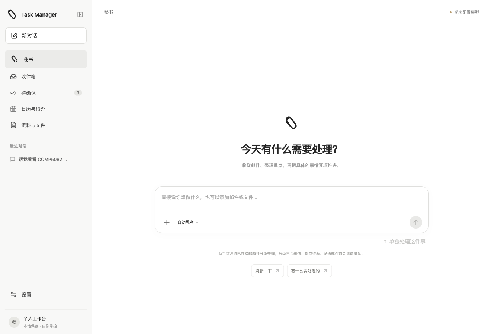

把邮件、资料、文件处理与待办放在同一个对话里。此公开演示只使用合成课程与校园职业中心资料。
真实截图和箭头标注；从固定秘书入口开始，再跟着学生、实习两个场景操作。
了解资料怎样进入助手，哪些步骤由你审核。
查看实际跑通的范围、复现依据及尚未解决的问题。
逐轮查看真实回复、来源、经验复用和实际出现的问题。
查看收信分类、误分类纠正、子任务处理与回到主线的真实过程。
仓库包含可运行源码、合成示例与图文手册。请按 README 安装依赖并启动；Mac 应用和本机数据库快照没有放进源码仓库。
本地日历与待办是应用内的数据；没有把它自动写入外部日历。模型报告“检查完成”不等于业务事实保证，正式保存和发送前仍要核对结果。手册截图没有发送邮件。

更新于 2026 年 11 月 22 日。示例截图、原始输入与验收结果保留在同一交接目录。